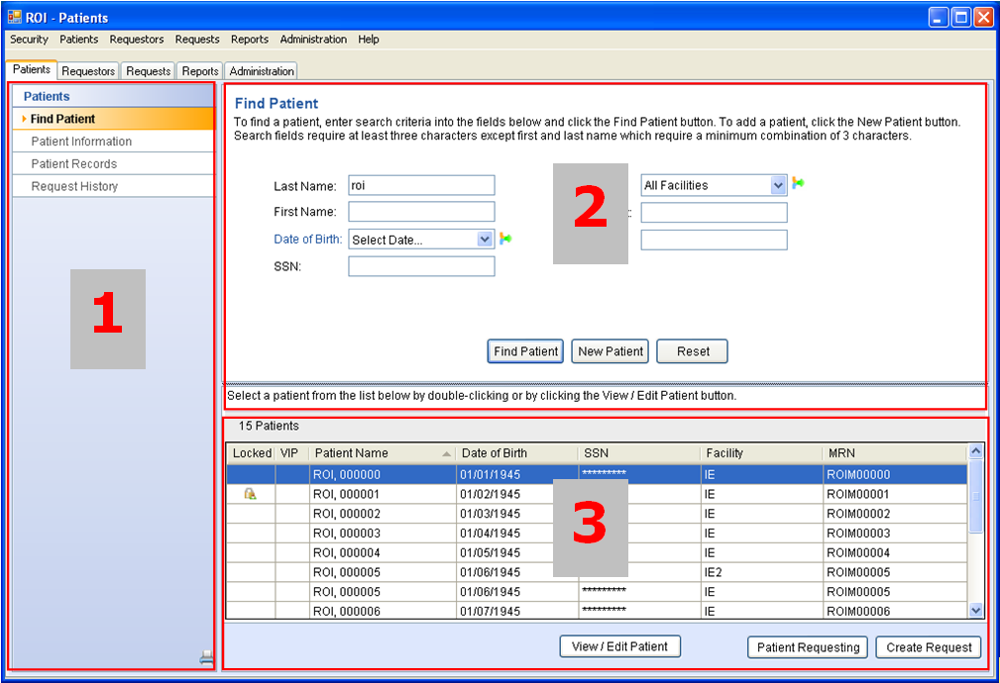

The ROI window is launched at full screen size, but can be resized as desired. Because the system imposes a minimum size for the window as a whole, when you reduce the window, some items may drop off the display. Use the window scroll bars to access such items.
The main window is divided into two or three areas, depending on the function you are using.

Left pane (1) The left pane displays options for the currently selected tab. It also displays a printer icon that allows you to monitor output jobs you have sent to an output queue.
Main content pane (2) The main content pane displays information related to the option currently selected in the left pane. For some functions, the main content pane covers the entire right side of the window and is organized into groups of related data.
Detail pane (3) The detail pane displays more specific data. When you perform a search or select an object in the main content pane, the detail pane displays detailed information and/or allows you to perform operations on the object you selected in the main content pane. For some functions, the detail pane does not display.
All panes assume their default positions and dimensions when you launch the ROI Module. You can resize panes with a click-and-drag operation on their separators.
Dialog boxes
Dialog boxes are launched from within the ROI Module's main window. They differ from the main window in the following ways.
Dialog box titles do not include the name of the ROI application, but do reflect the current function. For example, clicking the Update Request Status button results in a dialog box with a title of "Update Request Status."
Dialog box title bars do not contain buttons to minimize, maximize, or restore the dialog box. They do contain the close or exit icon (X).
Dialog boxes are modal. You must dismiss the box before you can continue.